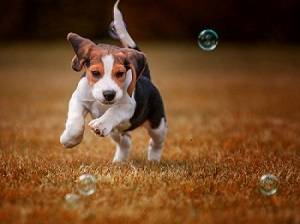

CONTACT INFO
+91 8584075371
sunetra.lodh@gmail.com
Admin:Sunetra Lodh
Beagle Project
Other names: English Beagle
Origin: England
Life span: 12–15 years
Weight: Male-(10.0–11.3 kg), Female-(9.1–10.4 kg)
Height: 13–16 in (33–41 cm)
Coat: Short haired, hard coat of medium length
Color: Tricolor or white in combination with black & tan/brown or brown/tan
Although there seems to be no reliable documentation about the early ancestry of Beagles, there are accounts of dogs of similar size being used to for hunting in Greece in the 5th century BCE. There was no formal name given to these dogs, however, they are considered to be the early ancestors of the first Beagles. Eighth-century records document an early scent hound known as the St. Hubert Hound, from which the Talbot Hound breed was created. The Talbot Hound was brought to England in the 11th-century through the travels of William the Conqueror. While the breed was used for hunting, it was known for being a rather slow runner. To remedy this situation, it is believed that hunting enthusiasts bred Talbot Hounds with greyhounds to increase their running speed.
The earliest dogs that were referred to as “Beagles” were small hound dogs that stood at 8 to 9 inches tall. These tiny dogs were called “Pocket Beagles” since they were literally small enough to fit into the pockets of hunters. In the mid-18th century, hunting increased in popularity and larger dogs became the preferred trail companions, leading to this line of miniature Beagles being overlooked, and eventually becoming extinct in 1901.
In the 18th century, two new hound breeds were developed: The Southern Hound and the North Country Beagle. As fox hunting increased in popularity, these dogs were crossed with larger dog breeds such as Stag Hounds, eventually creating the Foxhound. The 1840’s brought the development of the standard Beagle and the distinction of four different Beagle varieties: Medium Beagle, dwarf/lapdog Beagle, fox Beagle, and the rough-coated/terrier Beagle. In 1887, there were only 18 documented packs of Beagles left in England. However, Beagle lovers were determined to preserve their lineage. The Beagle Club and the Association of Masters of Harriers and Beagles were founded in 1890 and 1891 respectively, and came together to raise the number of Beagle packs in existence to 44 by 1902.

Beagles became popular in American households in the 20th century, initially used for hunting companions but also purchased to be family pets. The breed began winning prizes at the Westminster Kennel Club shows in 1928 and eleven years later, a Beagle took the title of top-winning American-bred dog of the year. In 2008, for the first time ever, a Beagle won “Best in Show.” Beagles currently hold the number three position on the American Kennel Club’s current “America’s 10 Most Popular Dog Breed List” and have been the only breed to rank in the top ten every year since their AKC registry.
Beagles have small to large litters.The new born puppies are not different than a kitten with eyes closed and almost no hairs.One should keep in mind that the litter box fits perfectly to the mother's size otherwise a puppy may die in litter box.Check the new born puppies by touching softly to know if they are facing any problem in litter box.Beagles may have up to 14 puppies in a litter.Average litter size for a Beagle is about 2-14 puppies.
CONTACT INFO
+91 8584075371
sunetra.lodh@gmail.com
Admin:Sunetra Lodh
Beagle Project